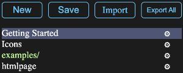
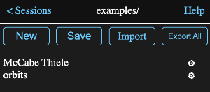
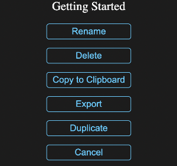

Math Minion continually saves whatever you are working on in a session (which is Minion speak for a document). Tapping the Sessions button on the bottom toolbar will open a view listing all of your saved sessions in case sensitive alphabetical order.
Math Minion never sends any session information to the web server it was loaded from, but rather stores the sessions locally in the browser indexeddb facility. This means that you will have a different set of storage for each browser and server you use.
For security reasons, web browsers require that any interaction with a device's file system involve actions by the user, thus Math Minion can't interact with your file system by itself. However it does have facilities that let you export or import sessions or even your whole library of sessions to the file system when you request it. If you export and import to a cloud based drive like iCloud, OneDrive, Google Drive etc., then it is easy to share your session between different devices.
Tapping the New button will result in the current session being replaced with a completely empty unnamed one. As you add tools and make changes, these changes will be saved and will be restored when the page is loaded again, BUT if you load another session or hit New again, the new session will be lost unless it has been saved with the Save button and given a name. Once given an name and saved, then changes will automatically be saved to that session.
If you are working on a new session that has not yet been saved, tapping on the Save button will pop up a dialog asking for the name to use to save the session. Once this has been done, further changes to the session will automatically be saved to that name.
Tapping on the Save button for a named session will immediately save the session, but this usually isn't necessary due to the automatic saving feature.
Tapping the Import button will open a system file browser, which will allow you to select a file that has been exported from Math Minion. If the file is for a single session, it will be read in, saved in the browser storage and become the current session.
If the file is the result of an export of the entire list or a folder of saved sessions, then a folder will be created containing all of the sessions.
Note that exported files are simply text files in JSON format.
The Export All button will open a system file browser asking for the name (default is root.txt) and location in which to create a file containing all the sessions stored in the browser.
This is handy both for transferring your whole library of sessions to a different device or browser, but also for creating backups. While the browser storage is persistant, having a tangible backup file is a good idea.
Simply tap on any session name to replace the current session with that session.
If you have a lot of sessions, you can organize your session list to emulate folders. This is done simply by giving a session a name that has two or more parts separated by a slash characters.
Thus if you name a session examples/orbits, only examples/ will appear in the session list, as in the image in the overview above. Tapping on examples/ will then switch the list to only show sessions whose name begins with "examples/" as in the image below.
Note that I have included the top header in this image and its title is the folder name, while the back button takes you back to the previous sessions view.
To remove a session or folder from a folder, simply rename it to something that does not contain a slash character. To move it to another folder, just rename it appropriately.
If you tap on the gear icon to the right of a session name in the list, a menu will appear with a number of options, which are hopefully self explanatory. Note these will work with folders as well as individual sessions.
Also note that some browsers don't allow apps to directly use the system clipboard, in which case Math Minion uses an internal clipboard for the copy operation. See the diagram background menu show clipboard help for a workaround.